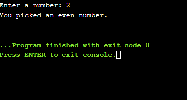

1.輸入字元 character input <<
Previous Next >> 3.列出少於十的數字 List Less Than Ten
2.奇數或偶數 odd or even
奇數或偶數
輸入類型是否等於相等比較數mod 再次，練習是第一位的（如果您想要額外的挑戰或想要花費更多的時間，可以添加一些其他內容），然後進行討論。 請享用！
Odd Or Even
input if types int equality comparison numbers mod
Again, the exercise comes first (with a few extras if you want the extra challenge or want to spend more time), followed by a discussion. Enjoy!
練習2（和解決方案）
詢問用戶一個數字。 根據數字是偶數還是奇數，向用戶打印一條適當的消息。 提示：偶數/奇數除以2時的反應如何？
附加功能：
如果數字是4的倍數，請打印出另一條消息。 向用戶詢問兩個數字：一個數字要檢查（稱為num），另一個數字要除以（檢查）。 如果檢查平均分為num，請告知用戶。 如果不是，請打印其他適當的消息。
Exercise 2 (and Solution)
Ask the user for a number. Depending on whether the number is even or odd, print out an appropriate message to the user. Hint: how does an even / odd number react differently when divided by 2?
Extras:
- If the number is a multiple of 4, print out a different message.
- Ask the user for two numbers: one number to check (call it
num) and one number to divide by (check). If check divides evenly into num, tell that to the user. If not, print a different appropriate message.
討論區 本週的概念：
模塊化算術（模運算符）
有條件的（如果語句）
檢查平等
Discussion
Concepts for this week:
- Modular arithmetic (the modulus operator)
- Conditionals (if statements)
- Checking equality
模塊化算術（模運算符）
從小學開始，我們就一直在進行算術運算（加，減，乘，除），這對於我們尋找除法問題不是答案，而是對除法運算的其餘部分有用。 該操作稱為“模運算”。 例如，當我將5除以3時，餘數為2，句子的內容如下：“ 5模3為2”。 在Python Shell中：
Modular arithmetic (the modulus operator)
We have been doing arithmetic (addition, subtraction, multiplication, division) since elementary school, and often it is useful for us to find not the answer to a division problem but the remainder when we do a division operation. This operation is called the “modulus operation.” For example, when I divide 5 by 3, the remainder is 2, and the sentence reads like this: “5 modulo 3 is 2.”
In the Python shell:
>>> 5 % 3
2
>>> 6 % 3
0
>>> 7 % 3
1
％符號正好是模數運算符。
The % sign is exactly the modulus operator.
有條件的
當計算機（或程序）需要做出決定時，它會檢查是否滿足某些條件，這就是條件一詞的來源。 條件語句是說“ if語句”的一種奇特的方式。 如果米歇爾（Michele）出生於紐約，則她擁有美國護照。 該語句是在這種情況下為真的條件（如果語句）。 在Python中，這是相同的方式：
Conditionals
When a computer (or a program) needs to decide something, it checks whether some condition is satisfied, which is where the term conditional comes from. Conditionals are a fancy way of saying “if statements”. If Michele was born in New York, she has an American passport. That statement is a conditional (if statement) that in this case is true. In Python this works the same way:
if age > 17:
print("can see a rated R movie")
elif age < 17 and age > 12:
print("can see a rated PG-13 movie")
else:
print("can only see rated PG movies")
當程序進入if語句時，它將按所有條件依次檢查稱為age的變量的值，並將相應內容打印到屏幕上。 注意，elif是“ else”和“ if”的組合。 因此，如果變量age的值保持為15，則“可以看到額定的PG-13電影”語句將顯示在屏幕上。
請注意elif age <17和age> 12語句如何具有語句--您可以以相同的方式使用or或不使用。 稍微了解一下邏輯及其原理，或者能夠理性地思考邏輯，將幫助您正確地掌握條件-哦，還有很多練習。 有關條件的鏈接：
When the program gets to the if statement, it will check the value of the variable called age against all of the conditions, in order, and will print something to the screen accordingly. Note that elif is a portmanteau of “else” and “if”. So if the variable age holds the value 15, the statement "can see a rated PG-13 movie" will be printed to the screen.
Note how the statement elif age < 17 and age > 12 has the statement and - you can use or and not in the same way. Understanding a bit about logic and how it works, or being able to rationally think about logic will help you get the conditions right - oh, and a lot of practice.
Links about conditionals:
檢查是否相等（以及一般的比較器） 您要對程序執行的基本操作是檢查某個數字是否等於另一個數字。 假設用戶告訴您在練習考試中有多少個問題答案有誤，並且根據正確答案的數量，您可以提出具體的操作建議。 對於整數，字符串，浮點數和許多其他變量類型，這是通過簡單的語法完成的：==。 要顯式檢查不平等，請使用！=。
Checking for equality (and comparators in general)
A fundamental thing you want to do with your program is check whether some number is equal to another. Say the user tells you how many questions they answered incorrectly on a practice exam, and depending on the number of correctly-answered questions, you can suggest a specific course of action. For integers, strings, floats, and many other variable types, this is done with a simple syntax: ==. To explicitly check inequality, use !=.
if a == 3:
print("the variable has the value 3")
elif a != 3:
print("the variable does not have the value 3")
請注意，在此示例中，條件是多餘的。 在第一個條件中，我們正在檢查變量a是否具有值3，在第二個條件中，我們正在檢查a是否不具有值3。但是，如果第一個條件不為真（a實際上不是3）， 那麼第二個條件根據定義是正確的。 因此，編寫上述條件的更有效方法如下：
Notice how in this example, the condition is redundant. In the first condition we are checking whether the variable a has the value 3 and in the second, we are checking whether a does NOT have the value 3. However, if the first condition is not true (a is in fact not 3), then the second condition is by definition true. So a more efficient way to write the above conditional is like this:
if a == 3:
print("the variable has the value 3")
else:
print("the variable does not have the value 3")
相同的相等/不相等比較適用於字符串。
有關相等性和比較器的鏈接：
The same equality / inequality comparisons work for strings.
Links about equality and comparators:
解答:
num = input("Enter a number: ")
mod = num % 2
if mod > 0:
print("You picked an odd number.")
else:
print("You picked an even number.")
但是這裡的解出現錯誤，正確的為:
num = int(input("Enter a number: "))
mod = num % 2
if mod > 0:
print("You picked an odd number.")
else:
print("You picked an even number.")
在第一行的num的變數有錯誤，沒有給予int(整型變數)。

1.輸入字元 character input <<
Previous Next >> 3.列出少於十的數字 List Less Than Ten